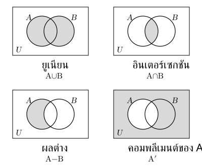
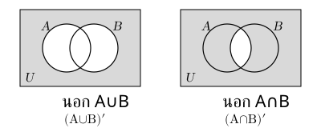
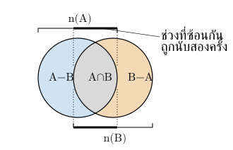
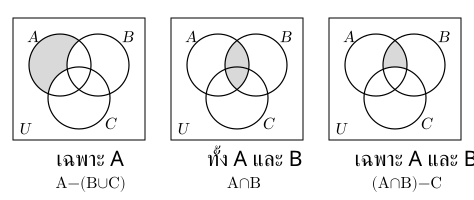
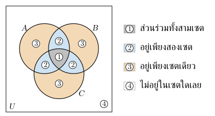

. เซตและสมาชิกของเซต
เซตคือกลุ่มที่ระบุชัดว่าสิ่งใดอยู่หรือไม่อยู่ในกลุ่ม สิ่งที่อยู่เรียกว่า สมาชิก
การเขียนเซตทำได้สองแบบ เช่น เซตของจำนวนนับที่น้อยกว่า
- แบบแจกแจงสมาชิก:
- แบบบอกเงื่อนไข: อ่านว่า เซตของ ที่เป็นจำนวนนับและน้อยกว่า
หมายถึง เป็นสมาชิกของ ส่วน หมายถึง ไม่เป็นสมาชิกของ
ลำดับและการเขียนสมาชิกซ้ำไม่เปลี่ยนเซต เช่น และ
จำนวนสมาชิกของ เขียนแทนด้วย เช่น ถ้า จะได้
. เซตว่าง เอกภพสัมพัทธ์ และสับเซต
เซตว่าง คือเซตที่ไม่มีสมาชิก จึงมี ระวังว่า ไม่ใช่เซตว่าง เพราะมีสมาชิกหนึ่งตัวคือ
เอกภพสัมพัทธ์ กำหนดขอบเขตสมาชิกทั้งหมดที่พิจารณา เช่น เรื่องชมรมของนักเรียนห้องหนึ่ง คือเซตนักเรียนทั้งห้อง
สับเซต: หมายถึงสมาชิกทุกตัวของ เป็นสมาชิกของ ด้วย เช่น
ทุกเซตเป็นสับเซตของตัวเอง และเซตว่างเป็นสับเซตของทุกเซต
เซตสองเซตเท่ากันเมื่อมีสมาชิกเหมือนกันทุกตัว หรือกล่าวได้ว่า ก็ต่อเมื่อ และ
ระวัง: “เป็นสมาชิก” กับ “เป็นสับเซต” ใช้คนละความหมาย เช่น ถ้า จะได้ แต่
. เพาเวอร์เซต
เพาเวอร์เซตของ เขียนเป็น คือเซตที่รวบรวม สับเซตทั้งหมดของ
เช่น ถ้า จะได้
ถ้า มีสมาชิก ตัว จำนวนสับเซตทั้งหมดคือ ดังนั้น
สมาชิกแต่ละตัวเลือกอยู่/ไม่อยู่ในสับเซตได้สองทาง เช่น มี ตัวจึงได้ เซต
ระวัง: สับเซตทั้งหมดนับรวมเซตว่างและ เองด้วย
. การดำเนินการของเซต
แผนภาพเวนน์: กรอบแทน วงแทนเซต ช่วยเห็นว่าสมาชิกอยู่กลุ่มใด
| การดำเนินการ | สมาชิกที่อยู่ในเซต |
|---|---|
| ยูเนียน | อยู่ใน หรือ อย่างน้อยหนึ่งเซต รวมถึงสมาชิกที่อยู่ทั้งสองเซต |
| อินเตอร์เซกชัน | อยู่ทั้งใน และ |
| ผลต่าง | อยู่ใน แต่ไม่อยู่ใน |
| คอมพลีเมนต์ | อยู่ใน แต่ไม่อยู่ใน |

เช่น ถ้า , และ จะได้
, , และ
ระวัง: กับ อาจไม่เท่ากัน และการหาคอมพลีเมนต์ต้องรู้ก่อนว่า คืออะไร
. สมบัติที่ช่วยจัดรูปเซต
ยูเนียนและอินเตอร์เซกชันสลับลำดับได้ เช่น และ
สมบัติการแจกแจงช่วยจัดรูปนิพจน์ที่มีหลายเซต
ผลต่างเขียนโดยใช้คอมพลีเมนต์ได้ว่า เพราะทั้งสองแบบหมายถึงอยู่ใน และไม่อยู่ใน
กฎของเดอมอร์แกนช่วยหาส่วนที่อยู่นอกเซต
| กฎ | ความหมาย |
|---|---|
| อยู่นอก หมายถึงไม่อยู่ใน และไม่อยู่ใน | |
| อยู่นอก หมายถึงไม่อยู่ใน หรือไม่อยู่ใน อย่างน้อยหนึ่งเซต |

จัดรูปพร้อมแปลบริเวณ เพื่อตรวจว่ายังกล่าวถึงสมาชิกกลุ่มเดิม
. การนับสมาชิกของสองและสามเซต
สูตรต่อไปนี้ใช้กับเซตที่มีสมาชิกจำนวนจำกัด
สองเซต
บวกจำนวนสมาชิก และ นับส่วนร่วมสองครั้ง จึงลบออกหนึ่งครั้ง

สามเซต
บวกทั้งสามเซต → ลบส่วนร่วมทีละคู่ → บวกส่วนร่วมสามเซตคืน เพราะส่วนกลางถูกบวกสามและลบสามครั้ง
สูตรที่ใช้ร่วมกันบ่อย ได้แก่
| บริเวณ | สูตรนับสมาชิก |
|---|---|
| อยู่ใน แต่ไม่อยู่ใน | |
| ไม่อยู่ใน | |
| ไม่อยู่ในทั้งสามกลุ่ม |
. แนวข้อสอบที่เน้น: อ่านเงื่อนไขแล้วนับสมาชิกให้ตรงบริเวณ
คนหนึ่งอยู่หลายกลุ่มได้ แต่จำนวนคนทั้งหมดต้องนับแต่ละคนครั้งเดียว
ก่อนคำนวณ ให้แปลคำในโจทย์เป็นบริเวณของเซต
| คำในโจทย์ | บริเวณของเซต |
|---|---|
| อย่างน้อยหนึ่งกลุ่ม | อยู่ใน |
| ทั้ง และ | อยู่ใน ซึ่งรวมคนที่อยู่ ด้วย |
| เฉพาะ และ โดยไม่อยู่ | อยู่ใน |
| เฉพาะ | อยู่ใน |
| ไม่อยู่เลยสักกลุ่ม | อยู่นอก แต่ยังอยู่ใน |
จุดสำคัญคือ “ทั้ง และ ” ไม่ได้แปลว่า “อยู่เพียงสองกลุ่ม” ถ้าโจทย์ไม่ได้บอกว่าไม่อยู่ ก็ต้องรวมคนที่อยู่ทั้งสามกลุ่มด้วย

เมื่อโจทย์ให้ข้อมูลสามเซตและเราจะเติมจำนวนลงในแผนภาพ ให้เริ่มจากส่วนร่วมทั้งสามถ้าทราบค่านั้นก่อน แล้วหาส่วนที่อยู่เพียงสองกลุ่ม เช่น
ส่วนที่อยู่กลุ่มเดียว: ลบจำนวนในบริเวณอื่นของวงออกจากจำนวนรวม โดยบริเวณที่ลบต้องไม่ทับกัน

ถ้าโจทย์ให้ข้อมูลผลต่างแทนจำนวนรวม เช่น ให้ ให้ใช้ความสัมพันธ์
เพราะสมาชิกของ แบ่งเป็นสองส่วนที่ไม่ซ้ำกัน คือส่วนที่อยู่ ด้วย กับส่วนที่ไม่อยู่
ตรวจบริเวณตรงคำถาม และรวมทุกบริเวณที่ไม่ทับกันให้ตรงจำนวนทั้งหมด